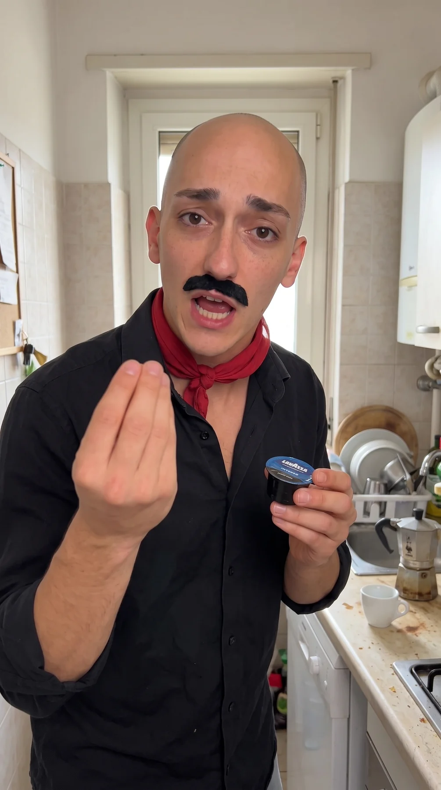
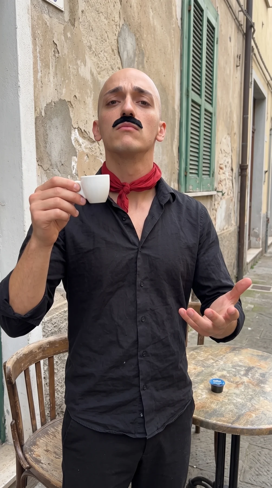
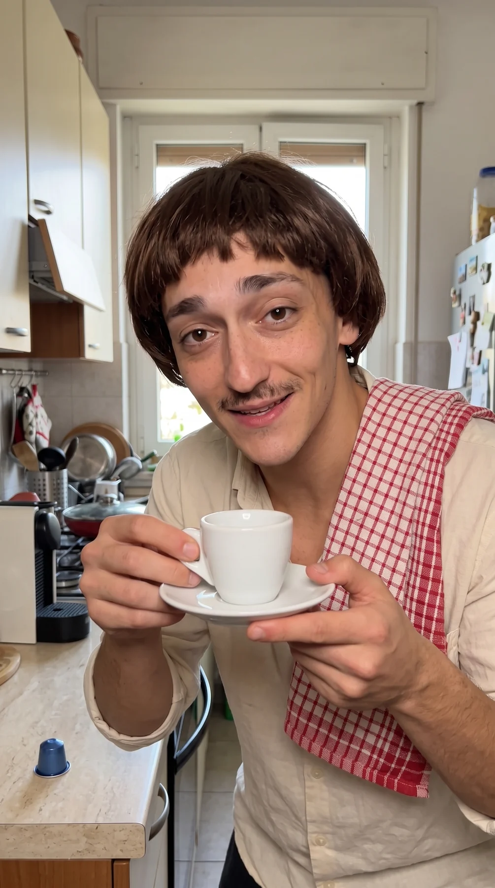
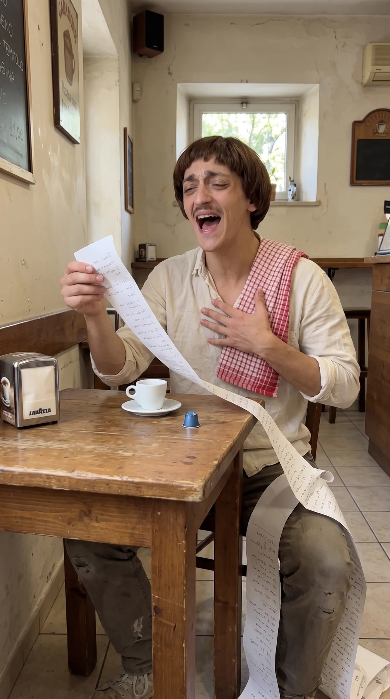
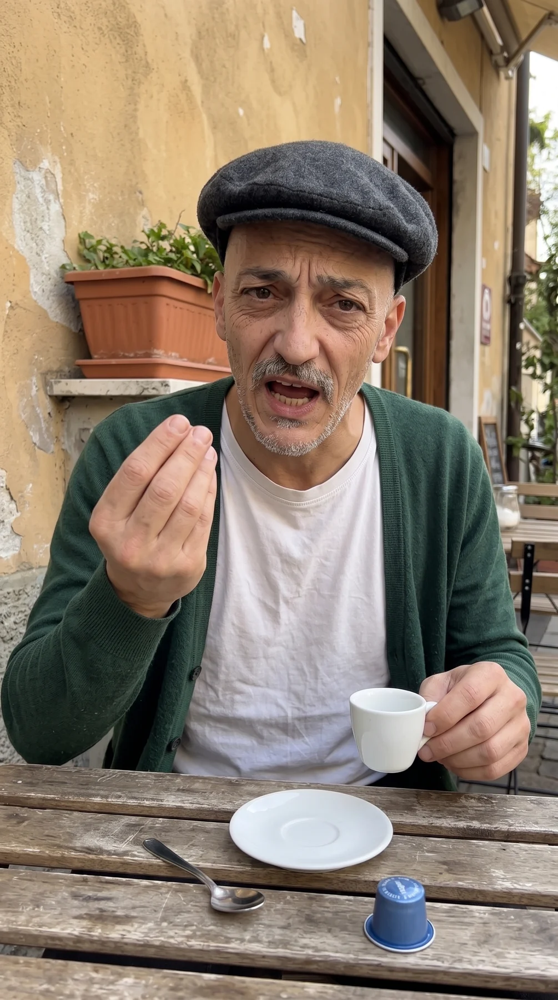
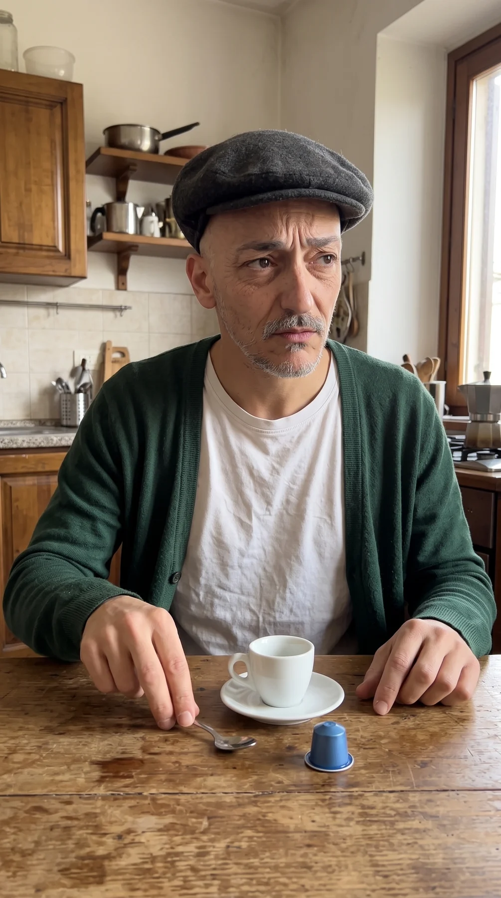
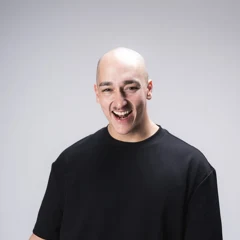

Enzo Intenso
Intenso y cremoso.
Lo vive todo en mayúsculas.
Café con carácter.
El café ya tiene carácter. Vamos a darle una cara. Intenso, dulce y equilibrado se convierten en tres personalidades italianas de Pelao Khe, creadas a partir del sabor de cada cápsula Lavazza BLUE.
El sabor define el gesto, la actitud y el humor de cada personaje. Su retrato llega a la cápsula y al estuche de la colección; su personalidad ayuda a reconocer y recordar cada variedad. Un recorrido que empieza en el café y termina en la elección.


Intenso y cremoso.
Lo vive todo en mayúsculas.


Dulce y aromático.
Le pone el corazón a todo.


Equilibrado y aterciopelado.
El nonno que encuentra el punto justo.
El humor de Pelao le da vida a cada carácter. La cápsula aparece junto a su personaje para que Intenso, Dolce y Rotondo se reconozcan también por su personalidad.
La elección pasa a la audiencia: ¿qué carácter tiene tu café? Encuestas y momentos cotidianos acercan cada personaje a su variedad y sostienen el vínculo con el producto.
El sabor de Italia,
donde estés.

Humor y personajes cotidianos. Tres personalidades originales para darle una cara al carácter de Lavazza BLUE.
Seguidores aproximados según el roster de BIG.